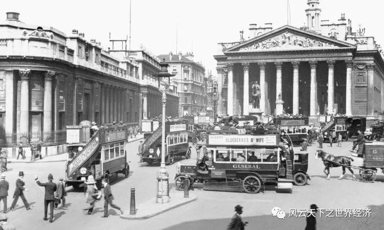
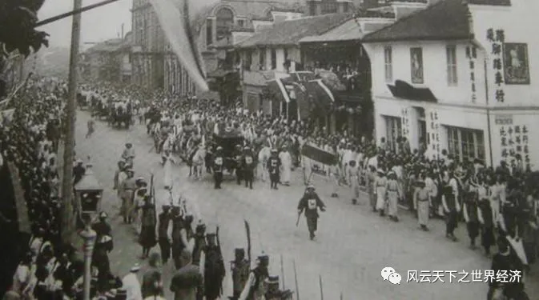

我们常说，“以史为镜”，20世纪的历史是最清晰的一面镜子，它距离我们最近，对当代的影响最深刻。而1901年，是20世纪的开端，是云谲波诡的100年之始，是旧时代落幕前最后的余晖与新时代来临时壮丽的交响的碰撞。这一年，有人抱怨着“新鬼烦冤旧鬼哭，天阴雨湿声啾啾”，也有人期许着“明年此日青云去，却笑人间举子忙”。
1901伊始，澳大利亚独立，英国维多利亚女王逝世，资本主义制度从北半球扩展向南，是巧合，还是必然？此时第二次工业革命的先锋力量美国和德国，正对英国的世界领袖地位磨刀霍霍，星条旗一统天下的日子即将一去不返，不列颠人却依然沉浸在蒸汽机带来的昔日辉煌中。世界经济的重心正在悄悄转移。

20世纪初英国蒸汽机
同时，在去年国会通过法案后，美国进一步推广金本位制度，这意味着美元与黄金之间的兑换比例被逐渐固定下来，美元的价值与黄金的价值成正比。这一制度在20世纪成为世界经济的基础，直到20世纪70年代黄金从货币的神坛跌落。
1901年春日，高尔基完成散文诗《春天的旋律》，其中有我们熟知的著名片段《海燕之歌》；届时，杨儒正就东三省交接事在莫斯科艰苦谈判，并再次拒绝了屈辱合约。他是否受到了海燕的鼓舞，不惧狂风吼叫、雷声轰响？
4月，清政府成立督办政务处，作为主持变法机构，宣布实行“新政”。摇摇欲坠的中华帝国继戊戌变法之后，做出了几乎是旧时代最后一次挣扎。倡导商业、奖励实业、放开限制、币制改革…着实推动了自由经济的发展，法律开始承认私有财产的正当性，但，这些条文被写进大清的官牍，从开眼看世界到当时，足足用了30年。
5月，清政府向列强赔款4.5亿两白银。清政府财政不堪负担，只得允许各地增加各种税捐，把赔款负担转嫁到全国人民头上，并指定各省分摊赔款数目，最多的江苏、四川、广东分别摊赔250万、220万、200万两，总计各省每年共摊赔1880万两，人民群众的生活更加可以用水深火热来形容。
眼光再次转向西方。法国和西班牙签署了马德里协定，结束了长达五年的摩洛哥危机。协定承认了法国在摩洛哥的特殊利益，并保护了其他国家在摩洛哥的利益。这场危机引发了各国之间的紧张关系，并表明欧洲列强之间的竞争将不可避免地导致战争，这加速了一战的爆发。
经济场上同样风起云涌。价值10亿美元、冠绝当时的世界的美国钢铁公司在卡内基的领导下创立。北太平洋铁路公司股价暴涨6倍后，掀起增发股票的狂潮。美国托拉斯们无视从俄罗斯席卷英法德比的金融危机，面对股市暴跌毫不动色，继续扩大钢铁、煤炭等固定资本投资；他们不会想到大棒即将扬起、萧条就要到来。
1901年的夏季，梁启超《立宪法议》发表，古巴成为美国的保护国，德国人齐柏林设计的人类首艘飞艇试飞成功，总理衙门正式改为外务部。世界是永恒发展的，然而，发展需要的是革命还是改良，需要结合实际情况来判断，每个社会都有属于自己的新陈代谢。

垂死挣扎——清末新政
理查德·克莱德曼有一首著名的钢琴曲《秋日私语》，然而这年的秋远非私雨，更像是电闪雷鸣。9月初，清政府废八股废武科，推行科举改革，试图招揽更多人才；3天后，美国总统威廉·麦金利遭到枪击身亡，副总统西奥多·罗斯福继任。罗斯福实行了一系列的进步改革。这位强悍的牛仔对垄断组织盘根错节式的蔓延深恶痛绝，对中小企业不断破产、人民生活水深火热深感痛心。他将垄断包括北大西洋铁路、昆西铁路、芝加哥铁路在内的北方证券公司置于《谢尔曼反托拉斯法》的鞭笞之下；之后又在牛肉、石油、烟草市场上大展拳脚，起诉足足40多家公司。
而我们熟悉且悲恸的是，在这位“托拉斯爆破手”上任仅两天之后，中国就与英国、美国、俄罗斯、德国、日本、奥匈帝国、法国、意大利、西班牙、荷兰和比利时签订《辛丑条约》。
至此，近代中国完全沦为半殖民地半封建社会，割地赔款、通商口岸、自由驻军、文化侵略，如此种种数不胜数，但最重要的是主权丧失。《辛丑条约》规定了清政府必须承担镇压中国人民反帝斗争的义务，有观点认为，这充分说明清政府通过《辛丑条约》的签订完全成为列强的“守土官长”和“洋人的朝廷”。
东方巨龙似乎彻底沉睡了……
然而世界不会静默地等待东方的苏醒，孟秋时节，意大利科学家费米出生，伊斯曼·柯达公司联合生产柯达相机。我们现在似懂非懂地谈论“费米子”，怀念地看着已经被淘汰的胶卷，岂知一个世纪之前他们诞生时的壮丽？我们也难以体会电报两端的英国人第一次听见对方声音时的惊喜，和挪威人第一次发现核反应堆时的震撼。
凛冬，带走了晚清重臣李鸿章，带走了洋务运动的憧憬，带走了中体西用的理想，带走了淮军和北洋水师曾经的辉煌。不知老臣弥留之际，可会想起自己在威海卫的霸气，和签订《马关条约》时的无奈？
1901年末，瑞典首次颁发诺贝尔奖。中国人不会想到，足足等了一个多世纪，我们才迎来了第一位中国诺贝尔文学奖得主。而在此之前，西方的科学理论和思想如同井喷，显得我们如此黯淡无光。
1901，斗转星移，工业革命，帝国主义；崭新纪元，难能类比，全球互通，世界一体。